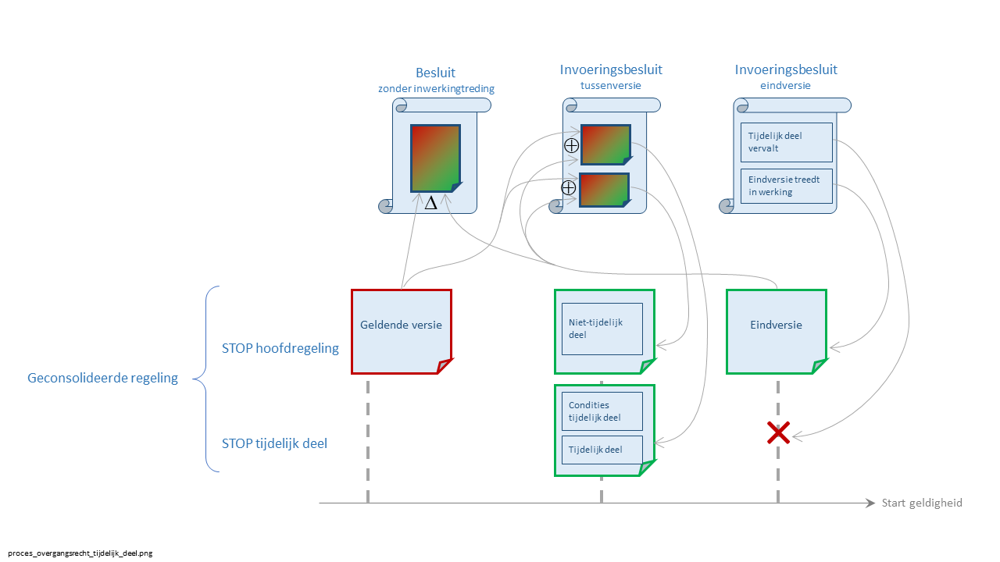
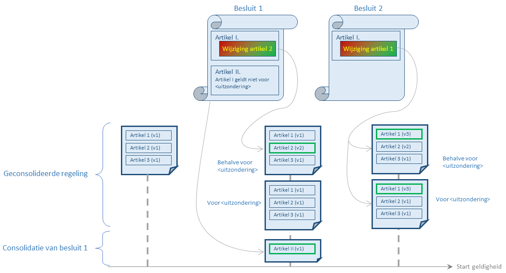

Overgangsrecht
Bij de introductie van nieuwe regelgeving kan het voorkomen dat een deel van de oude regelgeving nog blijft gelden voor bepaalde (bestaande) situaties, terwijl voor alle andere (nieuwe) situaties de nieuwe regelgeving geldt. Dat wordt vastgelegd in overgangsrecht, wat op zichzelf voorschriften van algemene strekking zijn die geconsolideerd dienen te worden.
In de huidige praktijk kan overgangsrecht op verschillende manieren opgeschreven worden:
Overgangsrecht is opgenomen in de regeling
Overgangsrecht is een voorschrift in een tijdelijk deel van de regeling
Overgangsrecht is een voorschrift in een aparte regeling
Overgangsrecht is een geldigheidsbepaling in een aparte regeling
De methoden worden hieronder in detail uitgelegd.
Voorkeursmethoden voor overgangsrecht
Het doel van het overkoepelende proces, namelijk het op een duidelijke manier inzicht bieden in de geldende regelgeving, wordt het beste ondersteund door (1) en (2). STOP 1.3.0 ondersteunt voor de automatische consolidaties alleen deze twee methoden. In de wijzigingsbesluiten voor deze methoden staan naast RegelingMutaties verder alleen bepalingen over inwerkingtreding. De consolidatie van deze inwerkingtredingsbepalingen is niet interessant (zie bespreking geoptimaliseerd model bij tekstmodellen). Wijzigingen van deze bepalingen zijn slechts een beperkte tijd actueel, namelijk totdat het besluit in werking is getreden en/of alle beroepsmogelijkheden zijn uitgeput.
Methode (3) is in principe mogelijk binnen STOP. Maar deze methode wordt ontraden: deze is niet toegestaan op voor regelingen die onder de Omgevingswet vallen en bieden daarnaast een verminderd serviceniveau.
Methode (4) kent wijzigingsbesluiten die losse, zogenaamde "zelfstandige bepalingen" bevatten. Dit wordt niet door de standaard ondersteund. Gebruik hiervan leidt tot regelgeving die niet correct wordt weergegeven door de automatische consolidatie die door STOP 1.3.0 wordt beschreven.
1. Overgangsrecht opnemen in de regeling
De meest eenvoudige manier is om het overgangsrecht op te nemen in de regeling zelf. Niet alleen in de initiële versie, maar ook als de regeling daarna gewijzigd wordt. Als bijvoorbeeld een regeling voorschriften bevat, zoals:
Artikel 5. De maximale nokhoogte is 50 meter.en het besluit wijzigt de voorschriften voor alléén nieuwe bebouwing naar 20 meter, ingaande 01-01-2020, dan kan dat verwerkt worden in (de wijziging van) de regeling zodat de regeling komt te luiden:
Artikel 5.
1. De maximale nokhoogte is 20 meter.
2. Voor gebouwen gebouwd voor 01-01-2020 is een maximale nokhoogte 50 meter.Het overgangsrecht wordt zo (onderdeel van) een voorschrift als alle andere. Dit wordt ondersteund door de standaard.
2. Overgangsrecht als tijdelijk deel van een regeling
Het is niet altijd mogelijk overgangsrecht op te nemen in de eigenlijke regeling. Een voorbeeld is een geleidelijke inwerkingtreding van een grote wijziging van regelgeving (bijvoorbeeld "Besluit van 24 april 2017 tot vaststelling van het tijdstip van inwerkingtreding van diverse onderdelen van de Wet van 13 juli 2016 ...", artikel II). Het eerste besluit beschrijft een wijziging van een regeling die nog niet meteen in werking treedt. Daarna treedt geleidelijk een steeds groter deel van de regeling in werking, waarbij het in werking getreden deel slechts voor een beperkt (maar steeds groter wordend) deel van alle gevallen van toepassing is. Gedurende de invoeringsperiode bestaan er tijdelijk twee versies van de regeling; nadat de invoering compleet is nog maar één.
STOP ondersteunt hiervoor een mechanisme dat ook in de Omgevingswet wordt gebruikt. Bij de inwerkingtreding van de Omgevingswet en aanverwante wet- en regelgeving bestaat een omgevingsplan van een gemeente uit een eerste versie van een regeling die ook omgevingsplan heet, en een tijdelijk deel dat de bestaande regelgeving (in de vorm van bestemmingsplannen) omvat. Juridisch is dit één geheel, maar het tijdelijk deel wordt informatiekundig gescheiden gehouden van de eerste versie van de regeling.

Het invoeringsbesluit dat slechts een deel van de eindversie in werking laat treden bevat in dat geval twee wijzigingsbeschrijvingen: één die de hoofdtekst van de regeling aanpast, en één die het tijdelijk deel beschrijft. Beide gebruiken hetzelfde renvooimechanisme dat voor de gedeeltelijke inwerkingtreding gebruikt wordt, waarbij de tekst eerst samengesteld wordt uit teksten uit de geldende regeling en uit de eindversie, en daarna eventuele aanpassingen gedaan worden. Wat anders is dan in de voorgaande manieren van opschrijven van overgangsrecht: de condities waaronder het tijdelijke en het niet-tijdelijk deel geldig zijn, maken beide onderdeel uit van het niet-tijdelijke deel van de regeling. De condities worden in het STOP-tekstmodel speciaal gemarkeerd zodat software ook weet hoe het deze onderdelen van elkaar moet onderscheiden.
Juridisch levert dat één regeling op, maar informatiekundig splitst STOP beide delen op. De geautomatiseerde consolidatie kan voor elk van de delen de geldige versie op elk moment in de tijd bepalen via dezelfde algoritmen die voor een regeling zonder tijdelijk deel worden gebruikt. Omdat in STOP ook is vastgelegd dat de twee delen bij elkaar horen, is de software van het bevoegd gezag in staat de versies als één geheel te beheren. In tegenstelling tot het opnemen van geldigheidsbepalingen in het besluit bestaat de tijdelijke versie ook echt tijdelijk; de consolidatie van een geldigheidsbepaling in een besluit blijft in principe eindeloos bestaan. Het aantal bij elkaar horende versies is daarom te overzien. Bovendien is software in staat bij het tonen van een artikel uit, zeg, het tijdelijke deel aan te geven dat dit artikel alleen onder bepaalde condities de geldende regelgeving weergeeft.
Overgangsrecht voor informatieobjecten
In deze beschrijving is alleen gesproken over de tekst van de regeling. Het mechanisme van tijdelijk en niet-tijdelijk deel wordt door de standaard ook ondersteund voor informatieobjecten.
3. Overgangsrecht als voorschrift in aparte regeling
Een overgangsbepaling kan ook als een zelfstandige bepaling worden opgenomen in het besluit dat een regeling wijzigt, zoals in dit voorbeeld: "Wet tegemoetkomingen loondomein", artikel 6.2. De overgangsbepaling wordt dan geen onderdeel van de consolidatie van de gewijzigde regeling, maar van de geconsolideerde regeling die ontstaat door consolidatie van het besluit. Immers: elk besluit leidt tot een consolidatie van de zelfstandige regelgeving die het bevat, alsmede tot consolidatie van bestaande regelgeving die door het besluit wordt gewijzigd. Zie

Juridisch is dit in het algemeen een correcte manier om overgangsbepalingen in de regelgeving op te nemen. De constructie wordt echter in sommige gevallen expliciet niet toegestaan: artikel 2.4 van de Omgevingswet stelt bijvoorbeeld dat: De gemeenteraad stelt voor het gehele grondgebied van de gemeente één omgevingsplan vast waarin regels over de fysieke leefomgeving worden opgenomen. Een overgangsbepaling moet in dat geval in het omgevingsplan zelf vastgelegd worden.
Het opnemen van overgangsbepalingen in een aparte regeling voldoet niet aan het doel van het overkoepelende proces, namelijk het op een machine-leesbare manier aangeven wat de geldende regelgeving is. Weliswaar wordt door de geautomatiseerde consolidatie de geldigheid van beide regelingen goed bepaald, maar STOP biedt geen mogelijkheid aan te geven dat de inhoud van de regeling en van het geconsolideerde besluit in samenhang gezien moeten worden. Een lezer van de geconsolideerde regeling zal er niet (door software) op geattendeerd kunnen worden dat er elders een gerelateerde bepaling staat. Het opnemen van een overgangsbepaling als een zelfstandige bepaling leidt daarom tot een verminderd serviceniveau bij systemen die regelgeving presenteren, terwijl het overkoepelende proces juist bedoeld was om dat serviceniveau te verhogen. Deze constructie wordt daarom ontraden.
4. Overgangsrecht als geldigheidsbepaling in het besluit
In de huidige praktijk wordt een overgangsbepaling ook wel gebruikt om de geldigheid van voorschriften uit de gewijzigde regeling te beschrijven. Als de te wijzigen regeling uit het voorbeeld "Besluit overgangsrecht transitievergoeding", artikel 4 wordt teruggebracht tot een regeling van drie artikelen, dan zou de geautomatiseerde consolidatie van het wijzigingsbesluit twee geldige versies van de gewijzigde regeling op moeten leveren, één voor de beschreven uitzondering en een andere voor alle andere gevallen.

Om dit mogelijk te maken zou STOP een manier moeten hebben om aan te geven dat er op een bepaald moment twee geldige versies zijn, en dat de geldigheidsbepaling in een andere regeling staat. Dezelfde constructie moet gaan gelden voor de regeling-gerelateerde informatie, die voor beide versies anders kan zijn.
Het toelaten van deze manier van opschrijven van geldigheidsbepalingen maakt het ook voor bevoegd gezag lastig om de regeling in de eigen systemen te beheren. Aan de tekst van de regeling zelf is niet te zien dat er twee versies van de regeling geldig zijn. Als het bevoegd gezag op een later tijdstip nog een wijziging wil aanbrengen die voor alle situaties geldt, dan moet bevoegd gezag aangeven hoe die wijziging in beide versies doorwerkt. De complexiteit neemt verder toe als artikel 2 zou verwijzen naar een informatieobject dat ook door het wijzigingsbesluit aangepast wordt. Dan moet de geldigheidsbepaling ook uitgebreid worden naar het informatieobject, en moeten daar ook meerdere versies van beheerd worden. Als in een volgend wijzigingsbesluit opnieuw een dergelijke geldigheidsbepaling is opgenomen, dan leidt dat ook weer tot een verdubbeling van het aantal versies van de geconsolideerde regeling.
Er is niet alleen complexe software nodig om de regelingen te beheren, ook software die de geconsolideerde regelgeving toont moet erop bedacht zijn dat er meerdere geldige versies op een bepaald moment zijn, en dat het onderscheid tussen de versies in een andere regeling staat.
Het toelaten van geldigheidsbepalingen in het besluit vereist daarom een lastig te gebruiken standaard en daarmee complexe software. Om die reden is ervoor gekozen deze mogelijkheid in de standaard voor het overkoepelende proces niet te ondersteunen.
Als een geldigheidsbepaling de geldigheid van een nieuwe regeling ten opzichte van bestaand recht beschrijft (bijvoorbeeld "Invoeringswet Wet ruimtelijke ordening"", artikel 9.1, lid 2) dan gelden de argumenten voor het opnemen van een bepaling in een aparte regeling; dat wordt ook ontraden: neem de bepaling op in de regeling zelf.